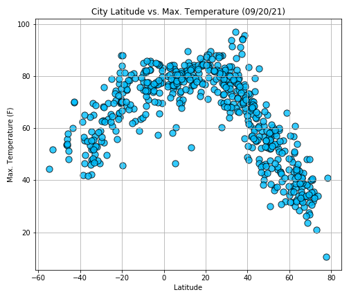

This project is an assignment hands-on practicing and demonstrating data requests from API, dataset cleaning, manipulation, and data visualization (geospatial visualization). The analysis includes two parts, the weather of more than 600 cities worldwide and spatial analysis of selected cities.
List of cities was derived from provided CSV file cities.csv. By using city names from the list to retrieve data from API then stored in a data frame CityWeather.csv. CityWeather.csv has columns of City, Country, Lat, Lng, Date, Cloudiness, Max. Temp., Humidity, Wind Speed that contain values of each city. Correlation of the latitude, temperature, humidity, percentage of cloud, and wind speed were plotted in scatter plots, and regression analysis was calculated and add to each plot.